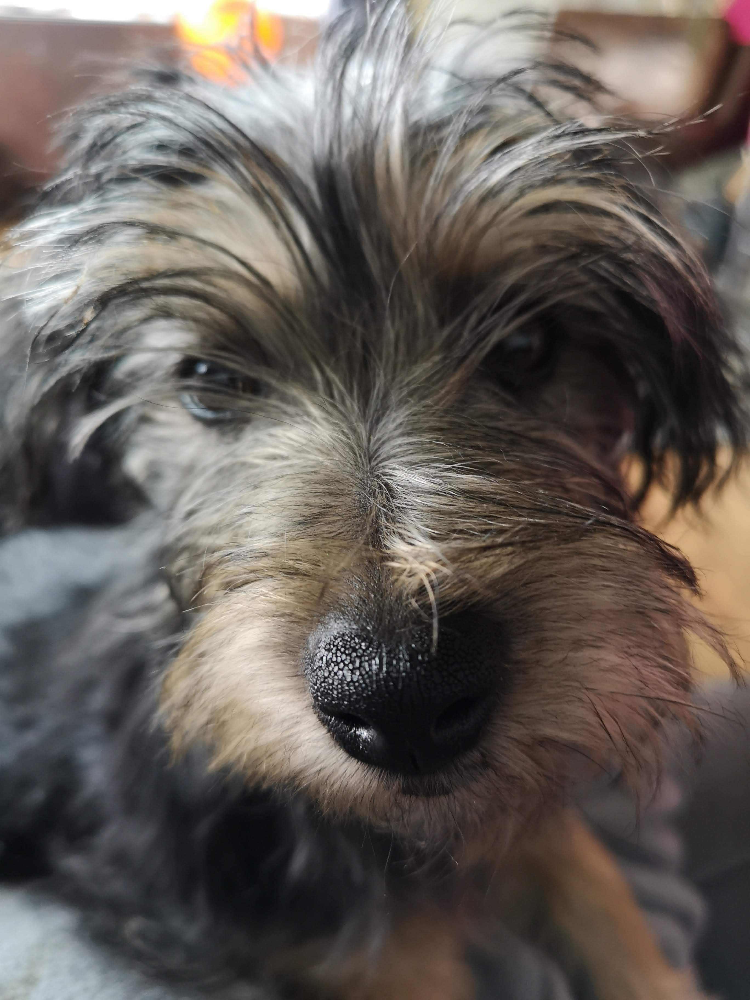
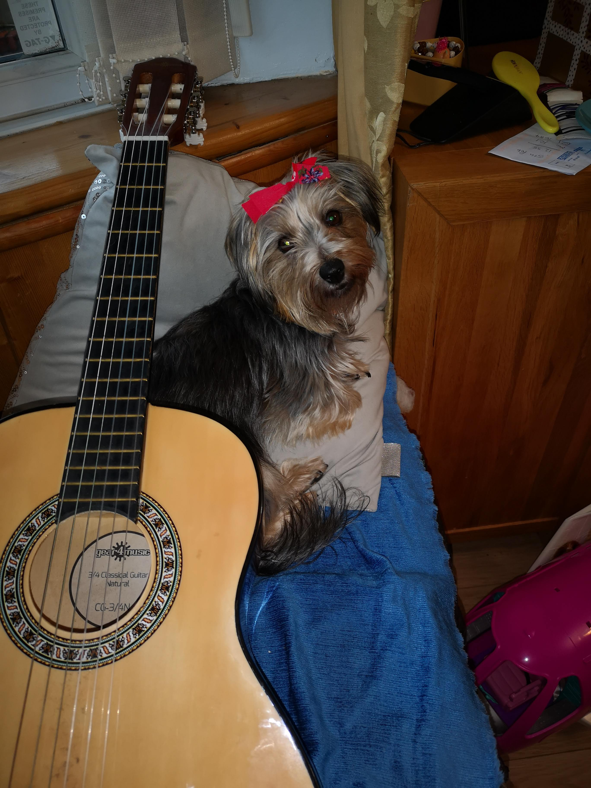

This is Ziggy.
Ziggy is a cross breed Daschund Yorkshire Terrier. Affectionately labelled, a "Dorkie". She was born June 1st, 2018. Eight weeks later she became a member of our family and my best friend. She's always up for everything. If I want to go for a walk, she's there. If I want to lounge around and do fuck all, she's all about it. I need to use the toilet? She follows me in and subsequently regrets it as the scratch marks on the inside of our toilet door can attest. Does she learn? Nope. Everytime, right behind me. Anytime I have to leave her in the house she'll jump on the window sill and watch me leave with her guilt stabbing eyes. Then explodes with excitement on my return like she can't believe her luck that I didn't leave her behind.
The bow was not my choice.
I've taught her tricks like 'high-five', 'speak' and 'play guitar'. She loves performing and her favourite treat is these little cheesy niblets. She's a very fussy eater and turns her nose up at any dog food we've tried to give her. I've given in and am now that pet owner that cooks for their pet. I never saw it coming but here we are.